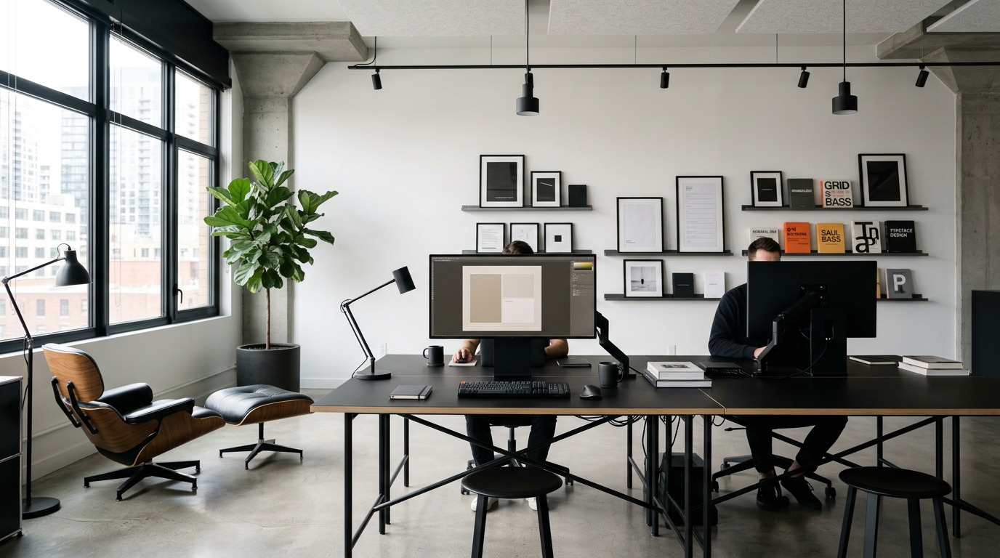
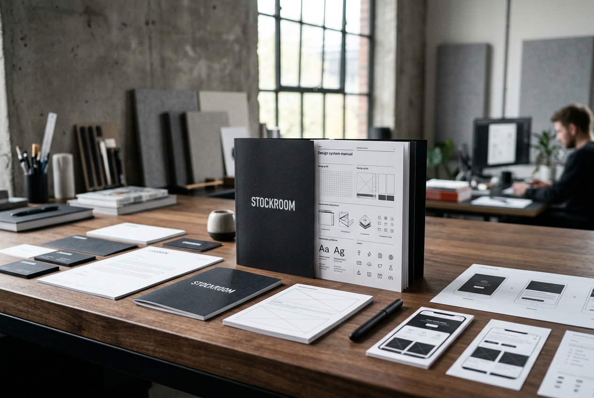
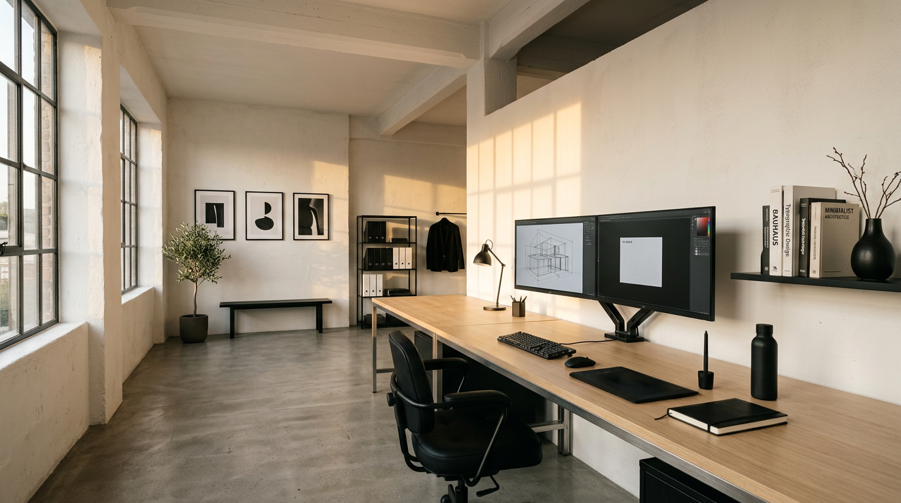

FINU
Fintech Super App
MEDBRIDGE
Healthcare Platform

STOCKROOM
E-commerce Design System
리서치에서 런칭까지, 전 과정을 설계합니다.
UX 리서치
사용자의 진짜 문제를 발견합니다.
UI 디자인 시스템
200개 화면도 한 줄로 정렬하는 시스템을 만듭니다.
프로덕트 디자인
아이디어에서 프로덕트까지.
디자인 스프린트
2주 안에 가설을 검증합니다.
₩8,000,000~
사용성 감사
기존 제품의 구조적 약점을 진단합니다.
삼성, 네이버 출신 디자인 디렉터가 이끄는
리서처, 비주얼 디자이너 팀.
김도현
Design Director
ex-Samsung, Naver
이서윤
Senior UX Researcher
박지민
Lead Visual Designer
디자인의 공통 언어
일관성의 자동화
구조의 최소 단위
가설이 아닌 증거
결제, 투자, 인슈어테크
원격 진료, 건강관리
커머스, 물류, 구독
B2B, 업무 자동화
모노스페이스는 우리가 미처 발견하지 못한 문제를 구조화해주었습니다. 디자인 시스템 도입 후 개발 속도가 40% 향상되었습니다.
이정훈
CTO, FINU
2주 스프린트만으로 6개월간 고민하던 UX 문제가 해결되었습니다.
박은정
PM, 메드브릿지
디자인 감각이 아닌, 구조적 사고로 접근하는 팀. 다시 함께 일하고 싶습니다.
최민수
대표, 스톡룸

ADDRESS
서울시 강남구 테헤란로 427, 8층
PHONE
02-6925-0801© COPYRIGHT
© 2024 모노스페이스 스튜디오